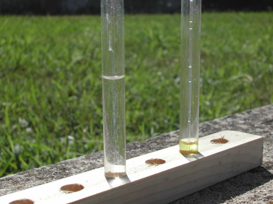
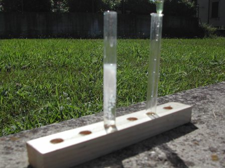

Nell'intervallo appena concluso avevo indirettamente accennato a qualche alcaloide guardando una delle loro piante generatrici, dal momento che l'origine di elezione di queste numerosissime e attive sostanze è il regno vegetale.
Qualche tempo fa, in occasione del mio lavoro con gli oleandri per il post n.124, avevo provato un paio di vecchi reattivi "storici" per gli alcaloidi, il reattivo di Marne e quello di Kedde.
Ho voluto dare ancora una volta un attimo di protagonismo al primo mettendolo alla prova con un'altra importante sostanza... ma ci vuole la seguente piccola premessa.
Quest'inverno, durante i famigerati "otto mesi" di pioggia, ho avuto per un po' di giorni una tosse tremenda, di quelle che ti fanno alzare di notte sparando cannonate da togliere il respiro.
Alla fine mi sono deciso (e la prossima volta lo farò molto prima!) a prendere qualche goccia di quel miracoloso farmaco che è la Paracodina, naturalmente da procurarsi con ricetta medica dato che il principio attivo è un oppiaceo.
In ogni caso, dopo un paio di somministrazioni assolutamente prive di alcun effetto indesiderato, ho detto come previsto addio alla tosse; addio alla tosse ma non alla preziosa bottiglietta, riproponendomi a tempo debito di saggiarne il contenuto secondo Marne.
Cosa che, concludendo la premessa, faccio ora.
Questo farmaco antitussivo ha come principio attivo la diidrocodeina:

Ho preparato per l'occasione qualche ml di reattivo di Marne, che mi piace chiamare "iodocadmiato di potassio" per analogia col mercurio; nel post prima citato c'è la composizione esatta, che qui riassumo dicendo che si tratta di una soluzione di ioduro di cadmio CdI2 (faticosamente preparato!) in una sol. concentrata di ioduro di potassio.
La provetta a sinistra nella foto contiene circa 2 mg di diidrocodeina (6 gocce di Paracodina), e nell'altra foto il risultato dopo l'aggiunta del reattivo.


Ho esagerato con la concentrazione per rendere ben visibile la reazione di precipitazione, che origina infatti un consistente precipitato bianco; a diluizioni maggiori ovviamente l'effetto è meno evidente anche se la sensibilità rimane comunque abbastanza elevata.
Quando i frutti della Metel saranno maturi e si presteranno a qualche esperimento, proverò questi vecchi reattivi su quella pianta: vedremo in seguito i risultati.
Per ora continuiamo a goderci questa meravigliosa (e stavolta cambio l'aggettivo!) caldissima estate.